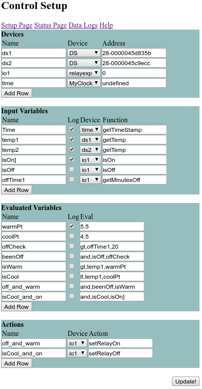

Help
Devices
There is support for 4 devices: Dallas Systems 1-wire temperature sensors (DS),
pin io (gpio), the Omega relay-expansion board (relayexp), and a MyClock utility device (MyClock).
The names given here to the devices are used in the Input Variables section.
DS
Address - the address for the sensor:
cat /sys/devices/w1_bus_master1/w1_master_slaves
GPIO
Address - Enter the pin number being used.
RelayExp
Address - Enter the address of the relay.
MyClock
Address - leave blank or enter 0
Input Variables
DS
getTemp - return the devices temperature reading.
GPIO
getStatus - Return status of pin. Either 0 or 1.
isOn - 1 if pin in high, 0 if pin is low
isOff - 1 if pin in low, 0 if pin is high
getMinutesOn - number of minutes the pin has been on
getMinutesOff - number of minutes the pin has been off
getTimeOn - miliseconds the pin has been on, 0 if off
getTimeOff - miliseconds the pin has been off, 0 if on
RelayExp
Same as gpio.
MyClock
getTimeStamp - Needed for plotting logged data.
Evaluated Variables
Input Variables can be evaluated to be used as triggers for Actions.
Constant variables can be entered with the value in the Eval column.
Availiable comparison functions take two arguements. Eg: "gt,1,2" evaluates 1 > 2 and returns false.
- gt, a, b : (a > b)
- lt, a, b : (a < b)
- gte, a, b : (a >= b)
- lte, a, b : (a <= b)
- and, a, b : (a && b)
- or, a, b : (a || b)
Actions
Use an evaluated variable in Name. When true, the specified device function will be executed.
Example

Devices
The devices are set up with addresses for temperature sensors and the relay address for the Omega2 relay expansion board.
A 'time' device is also made for plotting logged data.
Input Variables
The variable 'Time' is case sensitivce for making plots.
Temperatures are measured from both sensor devices.
The state of the relay is stored in two variables for so that the relay is not told to switch on/off if it is already in that state.
The ']' in 'isOn' is used to tell the plotting script to create a separate Y-axis on the right.
(This second Y-axis is hidden for visual simplicity.)
offTime1 records the amount of time the relay has been off.
Evaluated Variables
Constants
warmPt and
coolPt are bounds that the freezer should stay between.
offCheck makes sure that the freezer will not cycle too often and burn out the compressor.
beenOff ensures that the relay is off and has been off for long enough. (This is probably not necessary, but should prevent wierd bugs.)
isWarm - is the temperature beyond the warm setpoint?
isCool - is the temperature beyond the cool setpoint?
off_and_warm and
isCool_and_on are the states used to trigger actions.
Actions
The relay defined in Devices is turned on or off when all conditions are met.